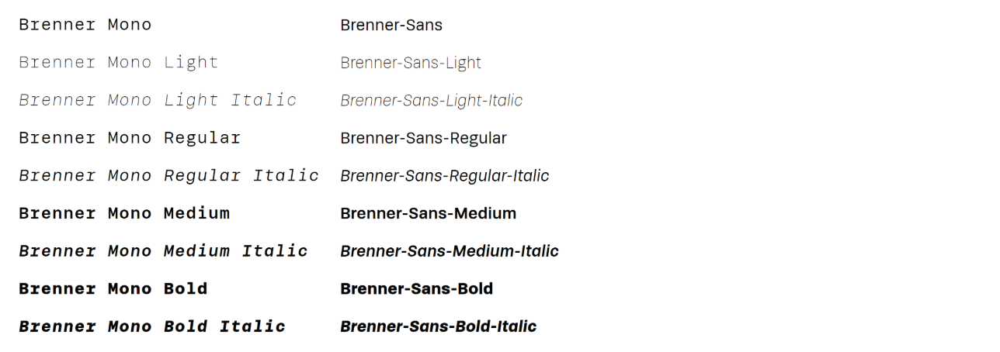
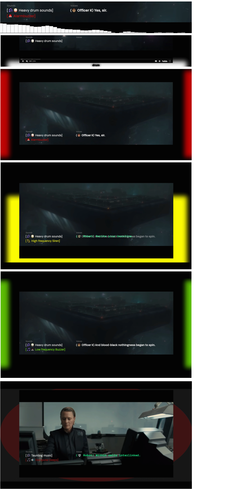

Bij het vak Web-Typography leren we hoe we de verborgen nuance uit een audiotrack overtuigend kunnen vertalen naar visuele (typografische) beelden.
De opdracht is als volgt:"Als je doof bent, of als je om een andere reden geen geluid kunt horen, dan mis je veel informatie als je een film kijkt. Knisperende voetstappen, langzaam aanzwellende muziek, nerveus getik op een deur, je hoort het natuurlijk allemaal niet. Nu bestaat er zoiets als Closed Caption, wat een type ondertiteling is waarbij ook dingen als omgevingsgeluiden en de muziek beschreven worden. Hierdoor krijgt een kijker die informatie wel binnen.""Alleen wordt die auditieve informatie nogal neutraal beschreven. Het geluid van huilend persoon zou bijvoorbeeld beschreven kunnen worden als snikgeluid op de achtergrond. En iemand die lacht zou geschreven kunnen worden als iemand lacht. Heel neutraal, bijna zakelijk, en bovendien allebei in precies hetzelfde neutrale lettertype. Terwijl het toch echt over twee heel verschillende emoties gaat.""Dat kan visueel sterker." "En dat gaan jullie doen."
Het fragment dat we gaan voorzien van Closed Captions komt uit de film genaamd: 'Blade Runner 2049'. Het fragment duurt 2 minuut en 16 seconden. Het grootste deel van het fragment bestaat uit een interview tussen Ryan Gosling (de hoofdpersoon) en een robot (de interviewer).
Dit is het fragment waar wij mee hebben gewerkt:
Het font dat wij mochten gebruiken heet Brenner en is hier onder te zien.
Brenner Mono (voor de robot) en Brenner Sans (voor de hoofdpersoon)
Marie van Driessche is onze doelgroep. Wij maken de opdracht voor haar. Marie is doof en hoort dus geen geluid. Marie moet daarom ondertiteling gebruiken onder video's. Een variant van ondertiteling is 'Closed Captions' waarbij ook wordt uitgeschreven wat de achtergrondgeluiden en muziekale aspecten in de video zijn, die Marie niet kan horen. Klein voorbeeldje van Closed Captions: Als er in een filmpje een deur wordt dichtgegooid kan je in de ondertiteling lezen: [Deur wordt dichtgegooid] of [Door slams].
Ik heb de ondertiteling van het fragment in 2 delen verdeeld: De geluiden en de stemmen. Links is te zien hoe ik geluiden heb weergegeven als Closed Captions en rechts is te zien hoe ik stemmen heb weergegeven als ondertiteling.
Closed Captions
Ik heb heel veel verschillende effecten toegevoegd aan het fragment om aan Marie duidelijk te maken hoe spannend het fragment is. Enkele effecten zijn hier onder te zien.
Effecten
Voor Web Typography moesten we een readme op Github maken waarin we alles heel specifiek uitleggen, ben je daar benieuwd naar, klik dan op de link hier onder.
En dan natuurlijk de link naar mijn eindresultaat van dit vak. Om mijn prototype in zijn complete versie te zien moet je enkele handelingen verrichten die uitgelegd staan in mijn readme, als je wilt ontdekken hoe je mijn originele prototype wilt gebruiken, lees dan even mijn readme en gebruik dan de volgende link:
En als je lui bent kan je natuurlijk op een makkelijke manier mijn prototype op YouTube bekijken met de volgende link:
Het was een unieke opdracht, heel interessant en leerzaam. Ik heb veel geleerd van het vak en ben trots op mijn eindresultaat. Ik wil Vasilis van Gemert en Marie van Driessche ontzettend bedanken voor het begeleiden van dit vak!
7,0